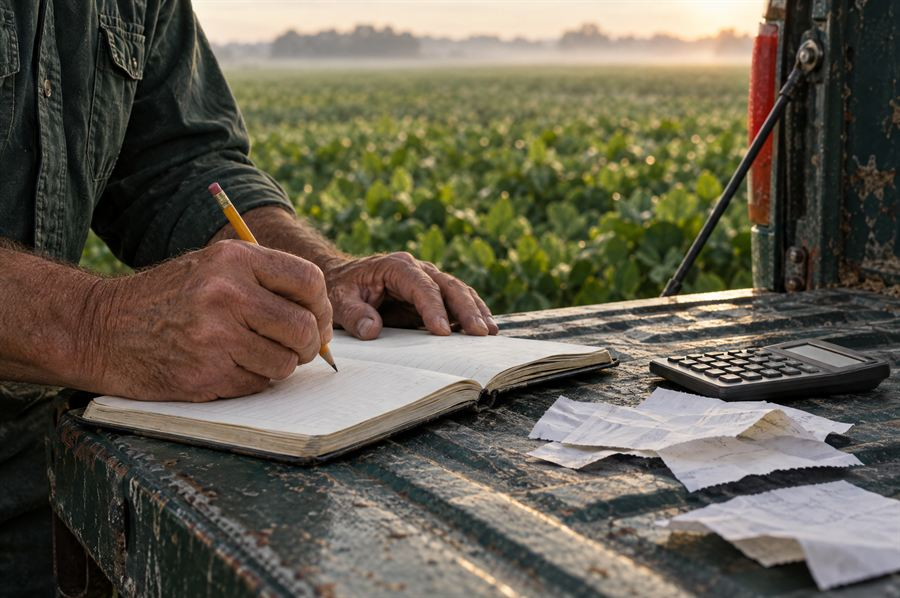
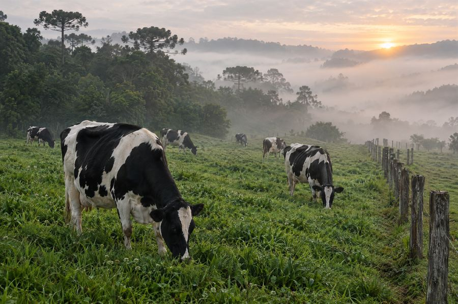
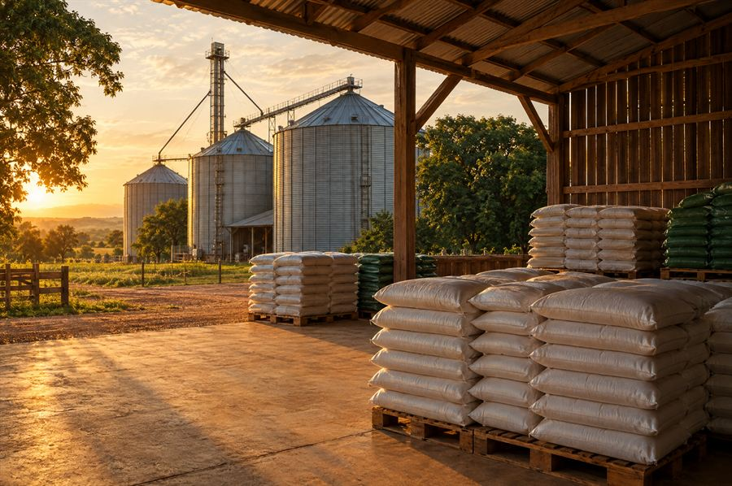

Gestão rural para quem produz
A fazenda inteira na ponta do lápis.
Custos, safra, leite e estoque organizados por talhão e por cultura, para você saber quanto cada lavoura realmente deixou de lucro.
Visto de cima
Cada talhão, cada litro, cada saca.
Serviços
Do caderno de campo ao lucro de cada lavoura.
Quatro frentes que conversam entre si: o que você anota vira custo, o custo vira resultado e o resultado vira decisão.
-

Safra 25/26 · Talhão 3ExemploR$ 91.850
custo lançado no talhão
- Sementes18.400
- Fertilizantes41.250
- Defensivos22.900
- Diesel9.300
planilha-contador.xlsx
Controle de custos e contabilidade rural
O produtor anota gastos e receitas do dia a dia, por safra e por talhão. O sistema gera a planilha organizada para enviar ao contador.
- Lançamentos por safra e por talhão
- Receitas e despesas no mesmo lugar
- Planilha pronta para o contador
-
Soja · 120 haExemplo
R$ 2.040/ha
de lucro, colhendo 65 sc/ha
ReceitaCustoEquilíbrio 48 sc
Resultado da safra e lucro por cultura
Cruza custo de produção, produtividade e preço de venda para mostrar quanto cada lavoura realmente deixou de lucro e qual o ponto de equilíbrio.
- Custo de produção por hectare
- Lucro real de cada cultura
- Ponto de equilíbrio em sacas
-

Leite · 42 vacasExemploR$ 0,82/L
de margem por litro em setembro
out/251.260 L/diaset/26
Gestão da pecuária leiteira
Acompanha produção diária de leite, rebanho, custo de alimentação e margem por litro, com a evolução mês a mês.
- Produção diária de leite
- Rebanho e custo de alimentação
- Margem por litro, mês a mês
-

Galpão · insumosExemplo2 alertas
para os próximos 7 dias
Boleto do adubo vence em 3 dias
Estoque e planejamento de compras
Controle de insumos, grãos armazenados e contas a pagar e receber, com alerta de vencimentos e de estoque baixo.
- Insumos e grãos armazenados
- Contas a pagar e a receber
- Alertas de vencimento e de estoque baixo
Fotos e números dos quadros são ilustrativos.
Como funciona
Do caderno ao resultado.
-
01
Anotar
Gastos, receitas, leite do dia e entradas no galpão, lançados na rotina, por safra e por talhão.
-
02
Organizar
O sistema separa tudo por cultura e por período e monta a planilha para o contador.
-
03
Decidir
Você vê o lucro de cada lavoura, a margem do leite e o que precisa comprar antes de faltar.
Sobre a TCA
Agro de verdade, números de verdade.
A TcaEnterprise existe para aproximar a tecnologia de quem vive o campo. Acreditamos que a boa decisão começa no chão: no custo de cada talhão, no litro de cada ordenha e no que está guardado no galpão.
Por isso cada ferramenta nasce de uma pergunta prática da fazenda, e não de um catálogo. Organizamos o que o produtor já anota, mostramos o que os números dizem e deixamos a decisão com quem conhece a terra.
Tecnologia, para nós, só vale quando funciona no campo, todos os dias.
Vamos colocar os números da sua fazenda em ordem?
Fale com a TCA- [A CONFIRMAR]
- [A CONFIRMAR]
- Endereço
- [A CONFIRMAR]